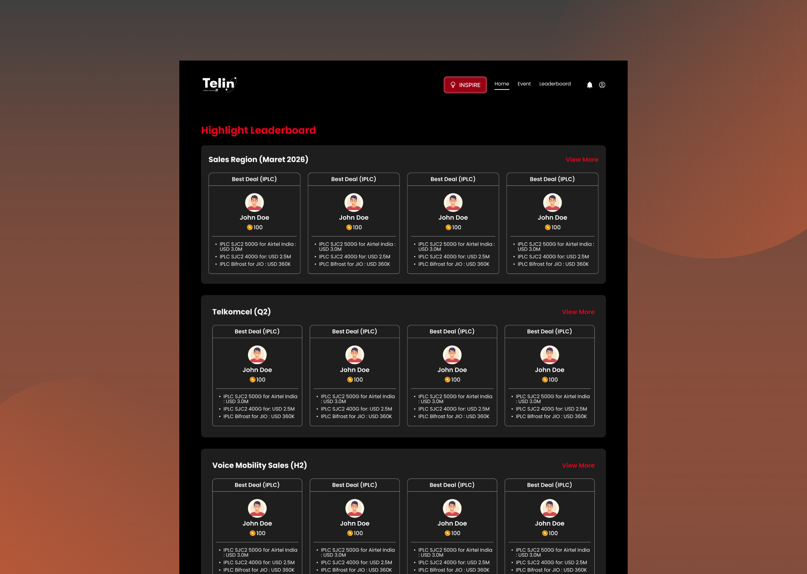
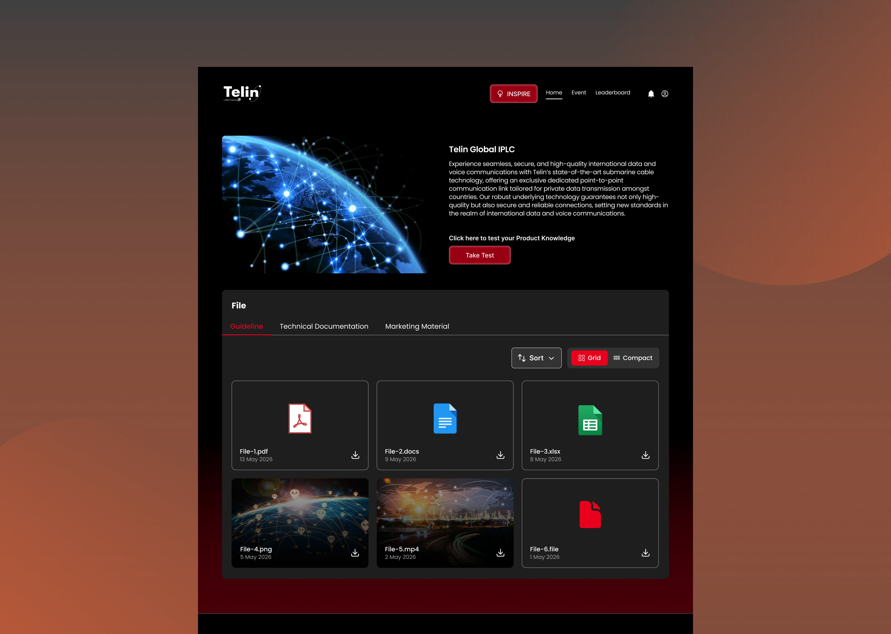
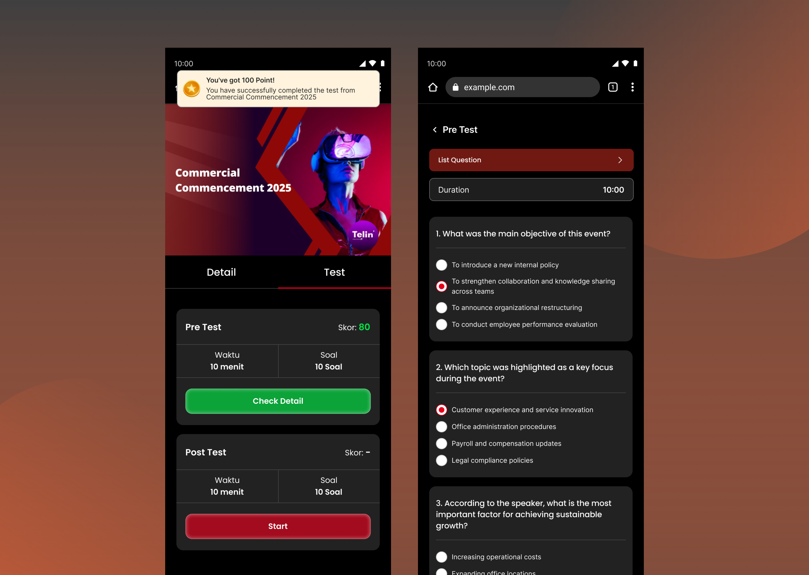

Project Overview
Telin Commercial Event Webpage (2026)
Telin Commercial Event Webpage is a new landing page for Telin’s Commercial Event platform. The website showcases various commercial events while also providing access to other information and features, including Telin products, sales leaderboards, Kudos, and other related content.
Role
UI/UX Designer
Platform
Desktop, Mobile
Tool
Figma

Commercial Event Landing Page
Problem
The website was a redesign of an existing landing page that had previously been developed with an established visual style. The client wanted the new design to feel more creative and engaging while still maintaining consistency with the existing website. This meant exploring a new layout and presentation without losing the established color palette and UI elements that were already part of the previous landing page.
What did I do?
- Design Analysis: I started by analyzing the previous landing page to understand its existing design style, layout, UI elements, and overall structure, since I was not involved in designing the previous version.
- Requirements Gathering : I gathered the requirements for the new landing page and documented the content sections and menus that needed to be included, ensuring that all required information was covered in the new design.
- Asset Collection : I collected and reviewed reusable elements from the previous landing page, including the color palette, image assets, buttons, cards, and typography, to maintain consistency with the existing design since it also helps me to save time in defining the UI foundation.
- Wireframing: I created wireframes to explore the layout and content structure of the new landing page, making sure the different menus and sections were organized clearly and that users could get an overview of the available content.
- High-fidelity Design Finally, after establishing the structure, I converted the wireframes into high-fidelity designs by introducing a more creative and engaging layout while maintaining the existing design elements and overall identity.
Solution
I redesigned the landing page by introducing a more creative and engaging layout that is quite different from the previous design. Then, I also reorganized the content and menus into a clearer structure so users could easily understand the different sections and access the information available on the platform. Existing elements such as buttons, cards, typography, and image assets were reused and adapted within the new layout to maintain consistency with Telin’s established identity while giving the landing page a refreshed experience.
Final Design




